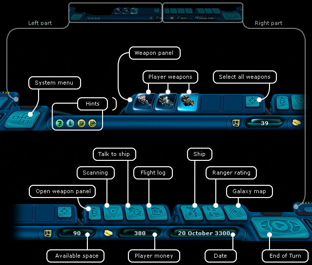

Ranger manual > Navigation panel
|
Ranger manual > Navigation panel
|
| Navigation panel The navigation panel is located at the very bottom of the screen and is comprised of the following elements. |

|
When the player hovers the cursor over one of the interface elements, a short description of this element appears on the panel and the respective hot key, provided there is one. Saved information, icon - There is a special element in many dialogue windows -  If you press such an icon, you will save the contents of the current window in the memory of the board PC, be it prices for goods in the Trading center or news in the Information portal. With that, a new icon appears on the navigation panel To save the contents of the dialogue window: Press the icon To view the contents of a previously saved window: Hover over the mouse cursor over the icon on the navigation panel. To delete a previously saved dialogue window: Right-click the relevant icon on the navigation panel. To delete all previously saved windows, hint icons, icons of the completed quests: Press the key F12. To delete all previously saved prices: Press the key F11. Note. The operation of other hint icons is similar to the work with the icon |